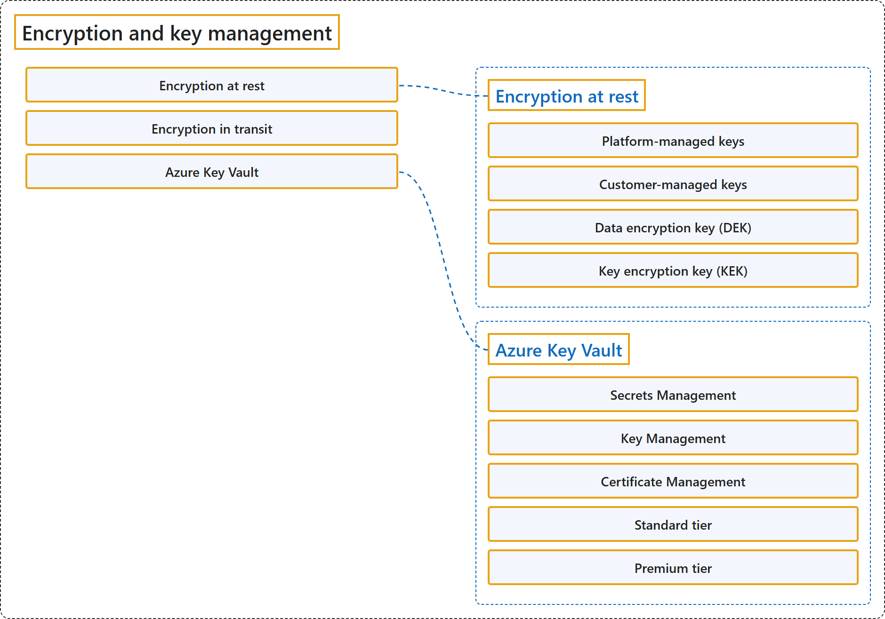

18.3 Encryption and Key Management
Classification

Glossary
| Term | Definition | 中文翻译 | Source |
|---|---|---|---|
| Encryption at rest 静态加密 |
(context) "Encryption at rest is a common security requirement. Azure encrypts data at rest by default by using platform-managed keys." | （语境）静态加密是一项常见的安全要求。Azure 默认对静态数据进行加密，使用的是平台管理的密钥。 | Microsoft, 2026b, para. 2 |
| Platform-managed keys 平台管理的密钥 |
"Platform-managed keys (default) (also sometimes called service-managed keys): Azure automatically handles all aspects of encryption key management, including key generation, storage, rotation, and backup." | 平台管理的密钥（默认）（有时也叫服务管理的密钥）：Azure 自动处理加密密钥管理的所有方面，包括密钥的生成、存储、轮换和备份。 | Microsoft, 2026b, "Key management options" section, para. 2 |
| Customer-managed keys 客户管理的密钥 |
"Customer-managed keys (optional): Organizations that require greater control over their encryption keys can choose to manage their own keys by using Azure Key Vault or Azure Key Vault Managed HSM." | 客户管理的密钥（可选）：需要更严格地控制自己的加密密钥的组织，可以选择用 Azure Key Vault 或 Azure Key Vault 托管 HSM 来管理自己的密钥。 | Microsoft, 2026b, "Key management options" section, para. 3 |
| Data encryption key (DEK) 数据加密密钥 |
"Data encryption key (DEK) - A symmetric AES-256 key that encrypts a partition or block of data, sometimes also referred to as a data key." | 数据加密密钥（DEK）：一个对称的 AES-256 密钥，用来加密一个分区或一块数据，有时也叫数据密钥。 | Microsoft, 2026b, "Envelope encryption with a key hierarchy" section, list item 1 |
| Key encryption key (KEK) 密钥加密密钥 |
"Key encryption key (KEK) - An encryption key that encrypts the DEKs by using envelope encryption, also referred to as wrapping." | 密钥加密密钥（KEK）：一个用信封加密（也叫包装）来加密各个 DEK 的加密密钥。 | Microsoft, 2026b, "Envelope encryption with a key hierarchy" section, list item 2 |
| Encryption in transit 传输中加密 |
(context) "Azure provides many mechanisms to help keep data private as it moves from one location to another." | （语境）Azure 提供许多机制，帮助保持数据私密，在数据从一个位置移动到另一个位置时。 | Microsoft, 2026c, "Encryption in transit" section, para. 1 |
| Azure Key Vault Azure 密钥保管库 |
(context) "Azure Key Vault is one of several key management solutions in Azure, and helps solve the following problems:" | （语境）Azure 密钥保管库是 Azure 中的几种密钥管理解决方案之一，用来解决下面这些问题： | Microsoft, 2026a, para. 1 |
| Secrets Management 机密管理 |
"Secrets Management - Azure Key Vault can be used to Securely store and tightly control access to tokens, passwords, certificates, API keys, and other secrets" | 机密管理：Azure 密钥保管库可用于安全地存储和严格控制访问，对象是令牌、密码、证书、API 密钥和其他机密。 | Microsoft, 2026a, para. 1, list item 1 |
| Key Management 密钥管理 |
"Key Management - Azure Key Vault can be used as a Key Management solution. Azure Key Vault makes it easy to create and control the encryption keys used to encrypt your data." | 密钥管理：Azure 密钥保管库可用作密钥管理解决方案，让你能轻松创建和控制用来加密数据的加密密钥。 | Microsoft, 2026a, para. 1, list item 2 |
| Certificate Management 证书管理 |
"Certificate Management - Azure Key Vault lets you easily provision, manage, and deploy public and private Transport Layer Security/Secure Sockets Layer (TLS/SSL) certificates for use with Azure and your internal connected resources." | 证书管理：Azure 密钥保管库让你能轻松预配、管理和部署公共与私有的传输层安全性/安全套接字层（TLS/SSL）证书，供 Azure 和内部联网资源使用。 | Microsoft, 2026a, para. 1, list item 3 |
| Standard tier 标准层 |
"Standard tier - Encrypts data using software libraries validated to FIPS 140 Level 1" | 标准层：用通过 FIPS 140 Level 1 验证的软件库加密数据。 | Microsoft, 2026a, para. 2, list item 1 |
| Premium tier 高级层 |
"Premium tier - Offers HSM-protected keys, generated and protected by FIPS 140-3 Level 3 validated Marvell LiquidSecurity HSMs, for the highest level of cryptographic protection" | 高级层：提供 HSM 保护的密钥，由通过 FIPS 140-3 Level 3 验证的 Marvell LiquidSecurity HSM 生成和保护，达到最高级别的加密保护。 | Microsoft, 2026a, para. 2, list item 2 |
References
- Microsoft. (2026b, July 21). Azure data encryption at rest. Microsoft Learn. https://learn.microsoft.com/en-us/azure/security/fundamentals/encryption-atrest
- Microsoft. (2026c, September 18). Azure encryption overview. Microsoft Learn. https://learn.microsoft.com/en-us/azure/security/fundamentals/encryption-overview
- Microsoft. (2026a, September 22). About Azure Key Vault. Microsoft Learn. https://learn.microsoft.com/en-us/azure/key-vault/general/overview